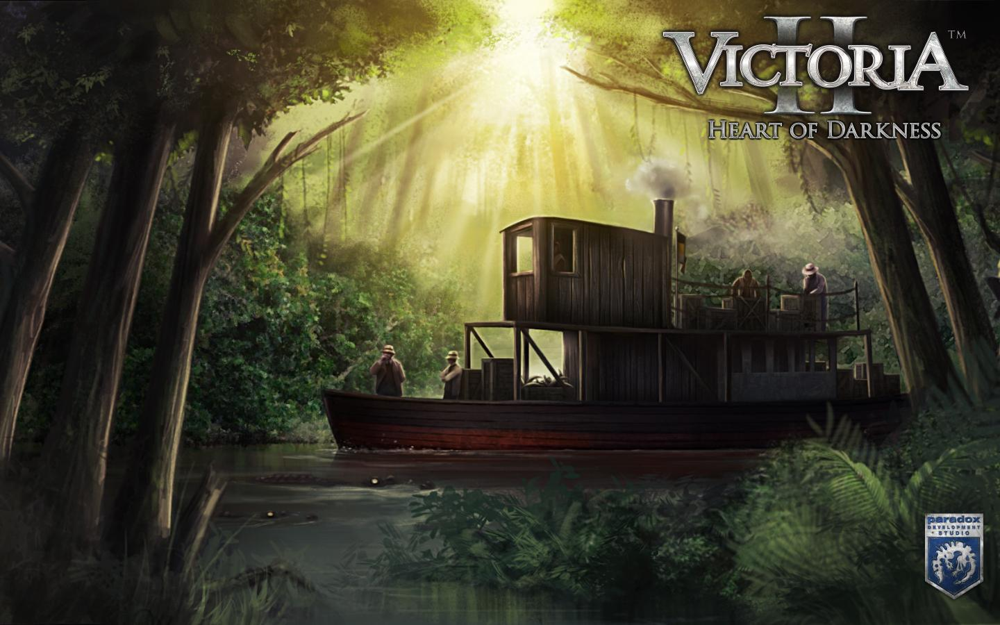
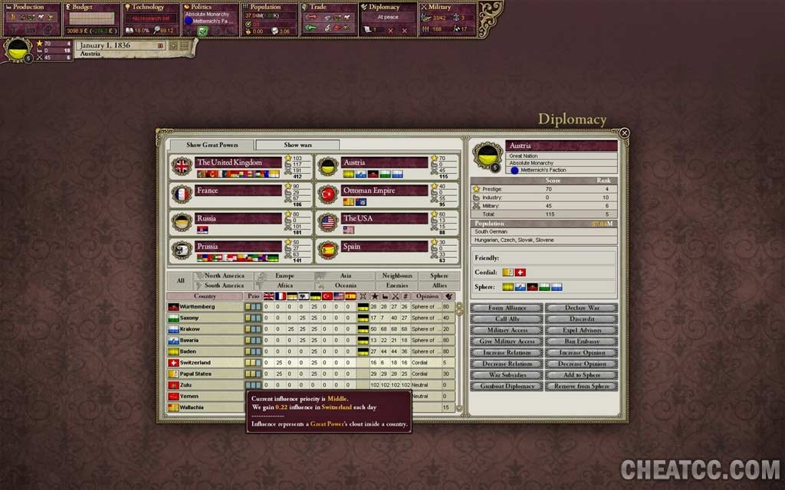
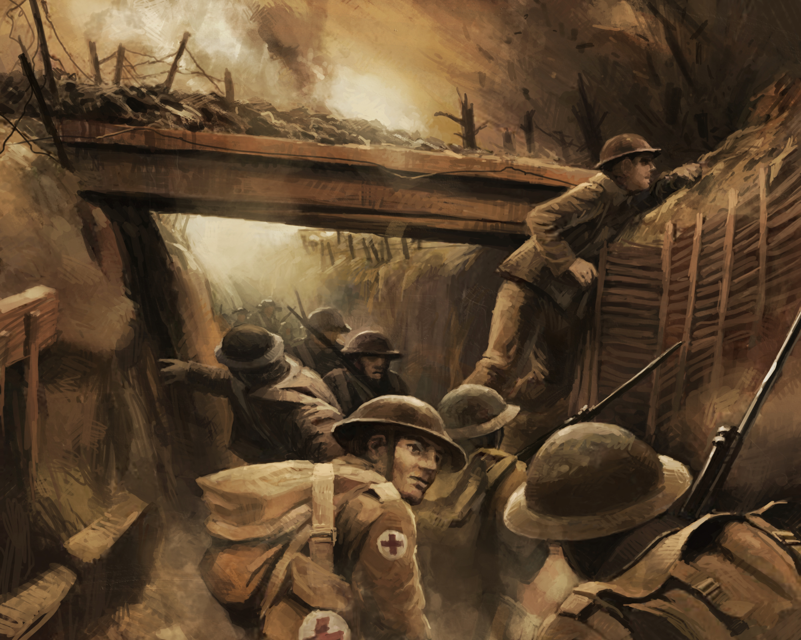
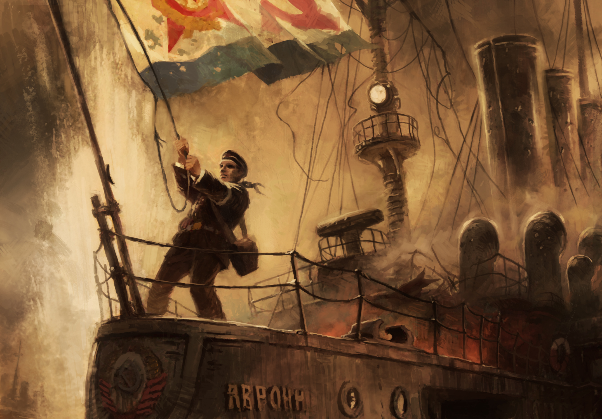
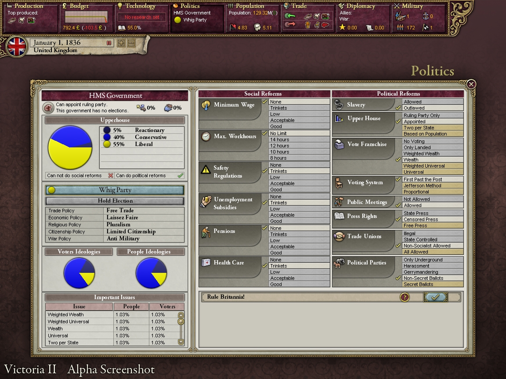

Victoria II is a grand strategy wargame developed by Paradox Development Studio and published by Paradox Interactive, sequel to 2003's Victoria. It was announced on 19 August 2009 and was released on 13 August 2010. Virtual Programming published the Mac OS X version of the game on September 17, 2010. Like its predecessor, Victoria II allows for the player to take control of and manage a 19th-century state including its political, diplomatic, economic, military, and technological aspects. The game has many historical aspects to it, such as the ability to colonize places that, at the time, were not under any European power, such as Sub-Saharan Africa, and Northern Canada. The games time frame is from 1836-1936.
|  | |||
|  |  |  |  |
Victoria II spans the globe from 1836 to the start of 1936 with over 200 playable nations. Like its predecessor, Victoria II focuses on internal management, covering the industrialization and social/political changes in a country with dozens of different government types. The game gives a lot of importance to the economy of a country by having a complex market system with over 50 types of goods and factories. While warfare is a component of the game it is not the primary focus as in other Paradox Interactive games such as the Hearts of Iron series. Nations' populations are divided into cultures, religions, and occupations. There are several different population groups or "pops" including aristocrats, officers, clergy, capitalists, clerks, craftsmen, soldiers, laborers, and farmers. Victoria II introduces two new groups, artisans and bureaucrats. As in other Paradox titles, like Europa Universalis, historical missions that are micro-objectives in the larger game have been added. There are thousands of historical events and decisions as well. These events and nationalist forces can lead to the creation or disintegration of nation states.
Victoria II contains a number of changes and improvements from its predecessor. The interface was streamlined when compared to the original game, which was described by producer Johan Andersson as, "the interface God forgot". Automation of various tasks has been added, including trade and population promotion. The education system has been overhauled by having clergy educate people of the same religion, and each population group now has their own literacy levels. Education and literacy's importance is reflected in the vast technology system that contains thousands of inventions. Additionally, the functioning of ideology in the game was tweaked such that population groups are more sensitive to changes in their country's situation, as well as inclined to agitate for specific levels of political and social reforms.
The economic system in Victoria II attempts to simulate the flow of resources in a world market. Every province in the game produces a resource in resource gathering operations or RGO's. Some resources, such as wheat, are demanded principally by your population. Other materials, like iron, are consumed by industry, but are still tradeable. The production and unemployment system from the original Victoria has been revised to better reflect market forces, whereas in the original the state provided the funds for resources and the player possessed a wide range of options with which to build their economy, provided they had access to the proper raw materials. All resources can be collected or produced by industry. The game also has a cottage production system simulating pre-industrial economies.